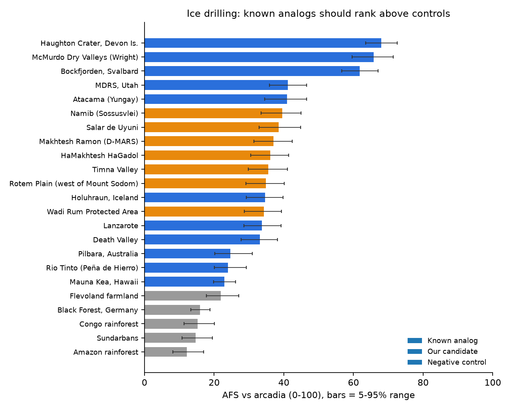

AnaloGraph · mission brief
Ice drilling → Arcadia Planitia
Mars target: Arcadia Planitia (SWIM ice candidate)
Where can a team practice drilling into ground ice before Arcadia Planitia or Deuteronilus Mensae?
Recommended Earth sites
1. Haughton Crater, Devon Is.
Why: ground ice, dryness
Weakest match: day-night temperature swing, bare ground
Gap Index: 33 / 100
2. McMurdo Dry Valleys (Wright)
Why: ground ice, bare ground
Weakest match: roughness, day-night temperature swing
Gap Index: 36 / 100
3. Bockfjorden, Svalbard
Why: ground ice, bare ground
Weakest match: day-night temperature swing, roughness
Gap Index: 40 / 100
Map
Full ranking (sites that passed the constraints)
| # | Site | Type | AFS (5-95%) | Gap Index |
|---|---|---|---|---|
| 1 | Haughton Crater, Devon Is. | known analog | 68 (63-73) | 33 |
| 2 | McMurdo Dry Valleys (Wright) | known analog | 66 (60-71) | 36 |
| 3 | Bockfjorden, Svalbard | known analog | 62 (57-67) | 40 |
Rejected and why
Constraints: ground ice >= 1
| Site | Type | Failed rule |
|---|---|---|
| MDRS, Utah | known analog | no ground ice or permafrost |
| Atacama (Yungay) | known analog | no ground ice or permafrost |
| Namib (Sossusvlei) | new candidate | no ground ice or permafrost |
| Salar de Uyuni | new candidate | no ground ice or permafrost |
| Makhtesh Ramon (D-MARS) | new candidate | no ground ice or permafrost |
| HaMakhtesh HaGadol | new candidate | no ground ice or permafrost |
| Timna Valley | new candidate | no ground ice or permafrost |
| Rotem Plain (west of Mount Sodom) | new candidate | no ground ice or permafrost |
| Holuhraun, Iceland | known analog | no ground ice or permafrost |
| Wadi Rum Protected Area | new candidate | no ground ice or permafrost |
| Lanzarote | known analog | no ground ice or permafrost |
| Death Valley | known analog | no ground ice or permafrost |
| Pilbara, Australia | known analog | no ground ice or permafrost |
| Rio Tinto (Peña de Hierro) | known analog | no ground ice or permafrost |
| Mauna Kea, Hawaii | known analog | no ground ice or permafrost |
What Earth cannot simulate
| Factor | Earth | Mars | Impact | Source |
|---|---|---|---|---|
| Surface gravity | 9.81 m/s^2 | 3.71 m/s^2 (0.38 g) | Drilling forces, rover traction and human movement differ | NASA Mars Fact Sheet (NSSDCA) |
| Atmospheric pressure | ~1013 hPa | ~6 hPa (under 1% of Earth) | Water ice sublimates instead of melting; dust and heat behave differently | NASA Mars Fact Sheet (NSSDCA) |
| Surface radiation | ~2.4 mSv per year (natural background) | ~0.64 mSv per day measured at Gale Crater | Crew dose and radiation effects on organics cannot be tested on Earth | Hassler et al. (2014) Science 343, 1244797 |
| Magnetic field | ~25-65 uT, everywhere | No global field; local crustal fields, ~2 uT at the InSight site | Earth sites are always shielded; magnetic navigation does not transfer | Johnson et al. (2020) Nature Geoscience 13, 199-204 |
| Coldest temperatures | Rarely below ~-60 C outside Antarctica | Night surface temperatures far below Earth deserts | Cold-soak tests need a thermal chamber on top of the field site | TODO: Mars Climate Database |
Validation

How to read this
AFS (0-100) ranks Earth sites against each other for this target and mission. The range shows how much it moves when the weights change. Gap Index (0-100) is the absolute distance that remains: lower is closer. Method and data sources are in the project README.